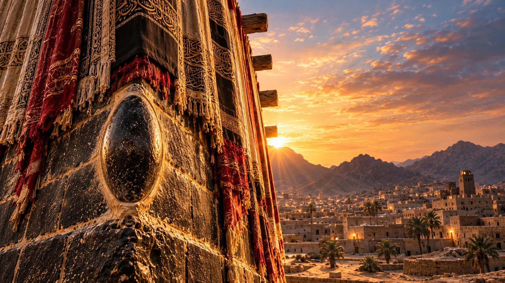
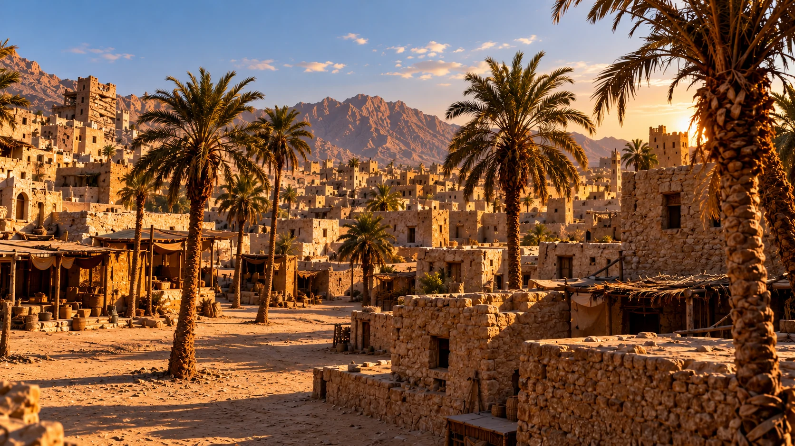
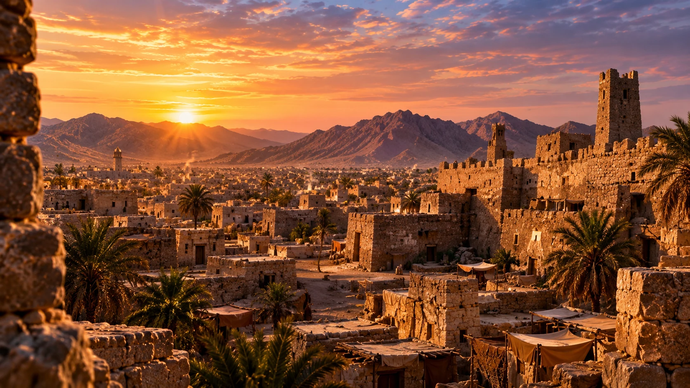
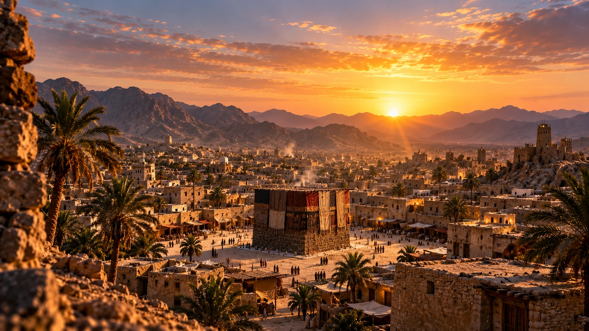

أحاديث نبويةوحكمقريبا

حكايات من السيرة والتاريخ الإسلامي
نروي قصصا من السيرة والتاريخ الإسلامي بصورة بصرية مؤثرة ومصادر موثوقة.

أحاديث نبوية
معلومات
دعاء
صور توضيحية مؤقتة — ستضاف دبابيس القناة لاحقا
صفحات من نور مساحة لحكايات السيرة والتاريخ الإسلامي، نروي فيها القصص بلغة عربية فصيحة وبأسلوب بصري سينمائي، مع العناية بصحة الروايات ومصادرها.
تابعنا على